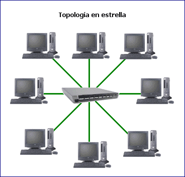
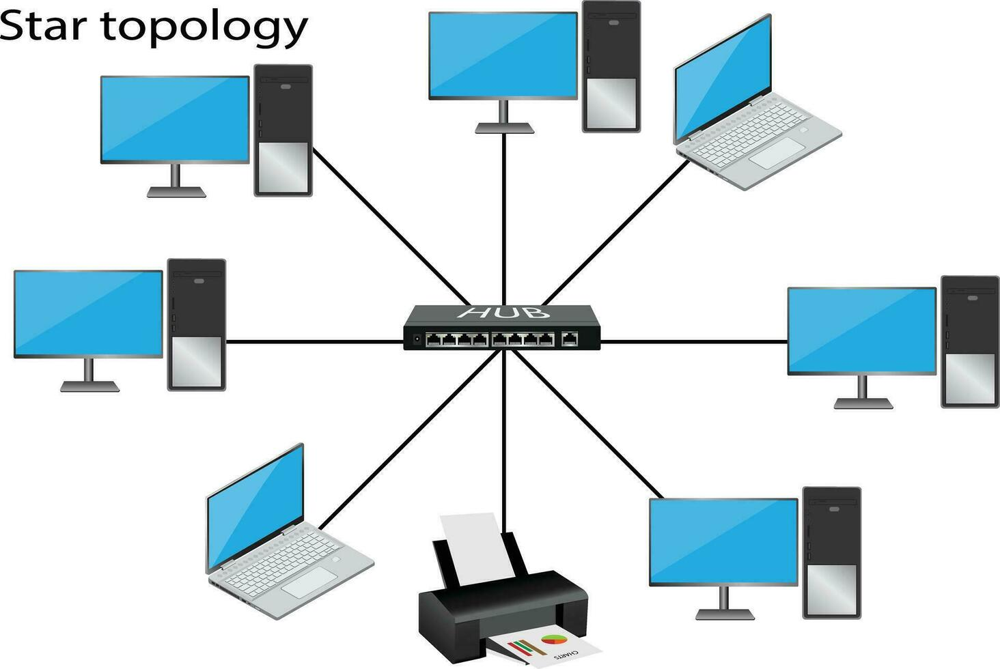
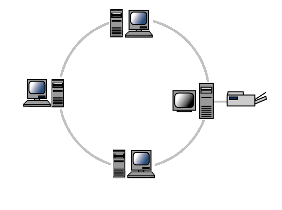
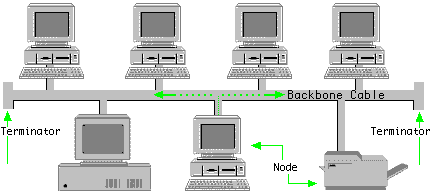
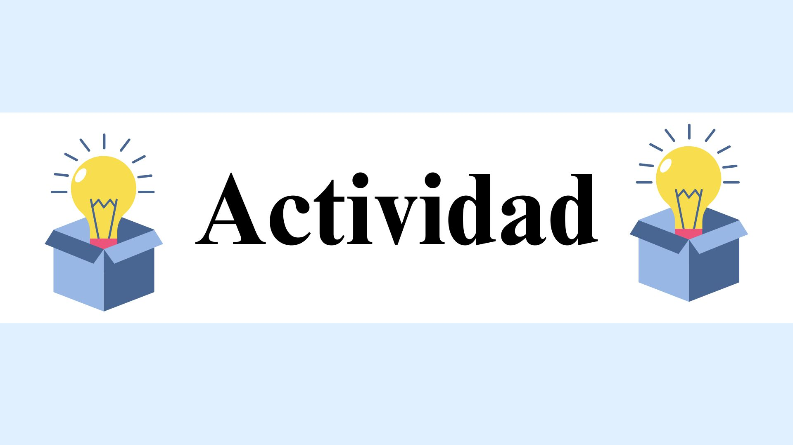

3.Topologías de redes de área local.
3.1 Topología en estrella.
Es el tipo de topología más común En ella los dispositivos se conectan a un punto central (hub) que actúa a modo de servidor. Este hub gestiona la transmisión de datos a través de la red. Permite que todas las estaciones se comuniquen entre sí. Sin embargo, si el nodo central tiene algún error, toda la red queda expuesta y puede provocar una desconexión. Existe también la topología de estrella extendida que funciona igual pero cada elemento que se conecta al nodo central se convierte en el centro de otra estrella. El cableado es más corto pero se conectan menos dispositivos.

Características de la topología de estrella
- Todos los dispositivos de la red (nodos) están conectados a un dispositivo central, que actúa como el punto de control y comunicación para todos los nodos conectados.
- Dado que todos los dispositivos están conectados a un punto central, es más sencillo identificar fallos y gestionar la red. Cada conexión es independiente, lo que facilita la instalación y la ampliación de la red.
- Aunque la red sigue funcionando si uno de los dispositivos falla, si el dispositivo central deja de funcionar, toda la red se cae.
- Pero el fallo de los dispositivos no afecta a los demás nodos, ya que cada uno tiene su propia conexión directa al nodo central.
Ventajas
- La principal ventaja es que limita el impacto de una falla. Cuando alguna computadora en la red no funciona correctamente, no afecta al resto de la red, sino que solo afectará el alcance local de esa computadora. La red va a continuar funcionando normalmente. Por esta misma razón, esta topología facilita poder agregar, reemplazar o eliminar cualquier componente individual hacia y desde la red.
- La gestión de la red es centralizada, a través del uso de una computadora, concentrador o conmutador central. Todas las computadoras dependen del dispositivo central. Esto significa invariablemente que cualquier problema que deje la red inoperable se puede rastrear en el concentrador central.
- Es muy fácil de administrar y mantener la red, porque cada nodo solo requiere un cable independiente. Es la más simple de todas las topologías en lo que respecta a la funcionalidad. Los problemas son fáciles de localizar, porque la falla de un cable va a afectar a un solo usuario.
Desventajas
- El principal problema con la topología de red en estrella es el hecho de que depende en gran medida del funcionamiento del dispositivo central. Si falla el concentrador, conmutador o servidor central, se caerá toda la red y todas las computadoras quedarán desconectadas de ella.
- Puede tener un costo más alto de implementación, especialmente debido a que se usa adicionalmente un conmutador o concentrador como dispositivo central de conexión de la red. Para conectarse se requieren más cables en comparación con la topología de anillo y bus, porque cada computadora se debe conectar individualmente al servidor central.
- El rendimiento de toda la red depende directamente del rendimiento del concentrador. Si el servidor es lento, hará que toda la red se ralentice. Si el concentrador central se ve comprometido de alguna manera, dejará a toda la red vulnerable.

3.2 Topología en anillo.
En esta red cerrada los nodos se configuran en un patrón circular con estructura de anillo. Cada nodo se vincula a uno con los dos contiguos. Al llegar un mensaje a un dispositivo, esté comprueba los datos de envío y si no es el receptor, lo pasa al siguiente, y así sucesivamente hasta que lo recibe el destinatario. Ofrece mejor rendimiento que la de bus, es fácil de instalar y localiza pero los nodos no pueden enviar mensajes al mismo tiempo. Es decir que no puede desconectarse ningún dispositivo o se perderá la conexión entre todos.
Características de la topología de anillo
- Los nodos están dispuestos en un lazo cerrado, es decir, cada dispositivo tiene una conexión directa con dos otros nodos, uno en cada lado, en forma de anillo, de ahí su nombre.
- En la mayoría de las redes de anillo, los datos viajan en una sola dirección (anillo unidireccional), pero también pueden configurarse para que los datos viajen en ambas direcciones (anillo bidireccional) para mejorar la redundancia.
- Como los nodos comparten el mismo medio de transmisión, se requiere un control para evitar colisiones en el envío de datos.
- Esto generalmente se maneja mediante un token, como en el caso de Token Ring, donde solo el nodo que tiene el token puede transmitir.
Ventajas
- Proporciona una buena comunicación a larga distancia.
- No se necesita un servidor de red o un concentrador central para controlar la conectividad de la red entre cada estación de trabajo.
- En este tipo de red son relativamente fáciles su instalación y también la resolución de problemas.
- Los datos pueden ser transferidos a altas velocidades entre las estaciones de trabajo.
Desventajas
- Un solo corte en el cable puede causar perturbaciones en toda la red.
- La adición o eliminación de cualquier nodo en la red es difícil y puede causar problemas en la actividad de la red.
- Todos los datos que se transfieren a lo largo de la red deben pasar a lo largo de cada estación de trabajo en la red, lo que puede hacer que sea más lenta que una topología en estrella.
- El hardware necesario para conectar cada estación de trabajo a la red es más costoso que las tarjetas Ethernet y que los concentradores/conmutadores.

3.3 Topología en bus.
También se le conoce como topología de red troncal, bus o línea. En esta red todos los dispositivos se conectan directamente a un canal y no existe otro vínculo entre nodos. Los datos fluyen a lo largo del cable a medida que viaja a su destino. Se instala fácilmente, tiene poco cableado y es fácil aumentar o disminuir el número de aparatos que se adjuntan a la red. Algunos inconvenientes son problemas de congestión, colisión y bloqueo. Además, si existe un problema en el canal, todos los dispositivos quedarán desconectados.
Características de la topología de bus
- Todos los dispositivos están conectados a lo largo de un único cable o bus, y cada dispositivo tiene un segmento de este bus.
- Los datos se transmiten en una sola dirección a través del bus, y cuando un dispositivo envía datos, estos se propagan a lo largo de toda la red.
- Solo un dispositivo puede transmitir datos en un momento dado, lo que significa que puede haber colisiones si más de un dispositivo intenta transmitir simultáneamente.
- Para evitar reflejos de señal y pérdida de datos, el bus tiene terminadores en cada extremo. Estos absorben las señales para evitar que reboten y causen interferencias.
- La topología de bus es relativamente simple de configurar y requiere poco cableado en comparación con otras topologías. Además, es fácil agregar nuevos dispositivos a la red.

Ventajas
- Si el dispositivo tiene el mecanismo de conexión apropiado, entonces puede agregarse fácilmente a la red. El nuevo dispositivo se conecta y se convierte de inmediato en parte de la red. Quienes necesitan una red temporal que pueda configurarse rápidamente, no hay mejor opción. Si varios usuarios necesitan acceso a una impresora, agregarla a la red satisface de inmediato esa necesidad.
- La topología de bus es la más barata de implementar. Esto se debe a que necesita menos cable. Aunque en ambos extremos de la red se requieren terminadores para garantizar su correcto funcionamiento, cuando se requiere una red pequeña sigue siendo asequible y fácil de instalar.
- Esta topología permite que los datos fluyan libremente por toda la red. Aunque esto limita conexiones externas, crea una red local que puede funcionar eficazmente con cada computadora que se haya conectado. En lugar de concentradores y conmutadores, se utiliza un servidor central, lo que significa que hay menos puntos potenciales de falla que se deban administrar.
Desventajas
- Solo puede agregarse a la red una cantidad máxima de dispositivos y computadoras. Esta limitación en su longitud aumenta el riesgo de colisiones, porque el espacio para la comunicación es muy importante.
- Debido a que cada computadora y periférico se conecta a través del cable troncal, agregar dispositivos ralentizará toda la red por utilizar solo un cable, esto pone en riesgo a toda la red si le sucede algo a ese cable. Si se daña por algún motivo, puede provocar que falle toda la red o que se divida en dos redes.
- Todas las transmisiones de datos que ocurren en las computadoras podrá ser vista por cualquier otra computadora conectada a la red troncal. Esto significa que en esta topología es difícil instalar opciones de seguridad, porque lo que los demás están haciendo puede ser visto por todos.
